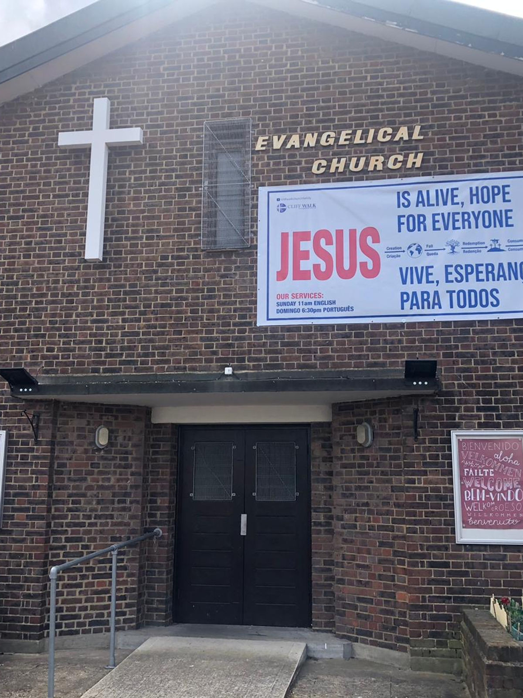

Over 150 years of faith, community and love in Canning Town
The church was founded in 1873 as the result of a family moving to Canning Town to witness amongst the people who were moving to London's east end to work in the new docks and factories that were being built.
From an old cow shed in Cliff Street they started a church. Soon they had built a chapel next door.
In 1958 the Council redeveloped the whole neighbourhood and this resulted in a new chapel and rooms being built in what was renamed Cliff Walk.
The local area continues to be redeveloped from its Victorian origins and from the 1950s estates. The local housing is a mixture of social housing, private rented and owner occupied.
The pupils at a local primary school speak over 50 languages and the church's vision is to represent the local population in its congregation.
In 2023 we celebrated our 150th anniversary, producing leaflets at our 100th, 125th and 150th anniversaries. They give a flavour of what has happened over the 150 years and how church life has changed — although the love of God for each one of us has not.
A family moves to Canning Town and starts a church from an old cow shed in Cliff Street.
The growing congregation builds a chapel next door to the original cow shed.
Council redevelopment results in a new chapel and rooms being built in what was renamed Cliff Walk.
The church celebrates a century of faithful ministry in east London.
A quarter-century milestone celebrated with the growing multicultural community.
150 years of God's faithfulness celebrated with the diverse Canning Town community.
When the church was founded it was linked with a group of churches throughout east London and Essex called the Peculiar People. They later changed their name to the Union of Evangelical Churches (UEC) and are a registered charity and limited company. Today there are 18 UEC churches. Each church is responsible for its own affairs within the UEC Constitution and Basis of Belief.
The church is also a member of the Evangelical Alliance. Canning Town is part of the London Borough of Newham and within Newham, evangelically minded churches co-operate together through Transform Newham. Cliff Walk Church is part of this network.